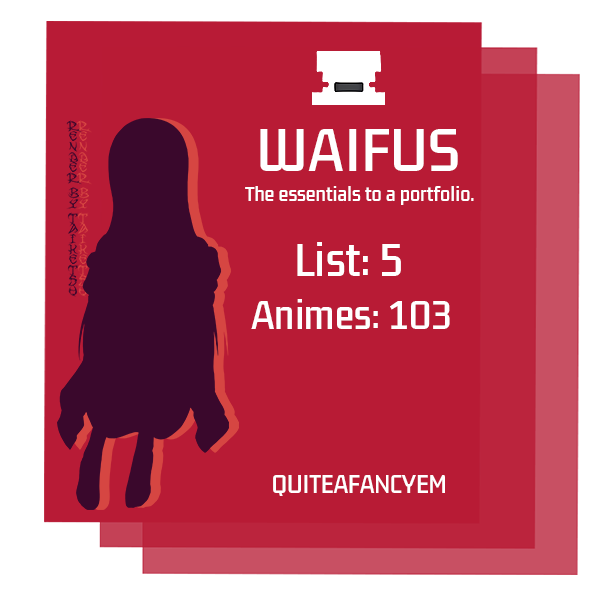

Waifus
- Joke Page Sorry! -
Maybe secrets exist here? mhm
Here I list out the best girl from various animes :D
Highly important page. Rankings are done accordingly.
And for the professionals viewing this, I'm sorry.

Waifus
- Joke Page Sorry! -
Maybe secrets exist here? mhm
Here I list out the best girl from various animes :D
Highly important page. Rankings are done accordingly.
And for the professionals viewing this, I'm sorry.

Kurisu Makise
- Top Tier -
Perfect in every way possible. Also a tsundere.
In looks? Well according to Reddit experts:
"Kurisu isn't a good waifu. She is a GOD-TIER waifu."
"Also the leggings..."
I'm sorry.
The only downside about her of course would be not existing.
Rin Tohsaka
- Tier 2 -
The best tsundere. Also Fate is amazing.
Top tier outfit and personality as well.
The downside about her of course would be not existing.

Hu Tao
- Top Top Tier -
Hu Tao! :D
Top tier personality and energy.
The downside about her again of course would be not existing.
Mai Sakurajima
- Top Tier -
Type B Tsundere. Amazing.
Officially certified best girl of 2019.
"You can classify tsunderes by type?"
"Throughout the story, she becomes a better person and has therefore already exceeded perfection."
The downside about her again of course would be not existing.